锁¶
线程安全问题¶
对于如下代码：
static int count = 0;
Thread t1 = new Thread(() -> {
for (int i = 0; i < 10000; i++) {
count++;
}
});
Thread t2 = new Thread(() -> {
for (int i = 0; i < 10000; i++) {
count++;
}
});
t1.start();
t2.start();
t1.join();
t2.join();
System.out.println(count);
Danger
以上代码输出的值 count < 20000
多个线程同时访问修改同一个变量就可能发生线程安全问题
临界区¶
- 一个程序运行多个线程本身是没有问题的
- 问题出在多个线程访问共享资源
- 多个线程读共享资源也没有问题
- 在多个线程对共享资源读写操作时发生指令交错，就会出现问题
- 一段代码块内如果存在对共享资源的多线程读写操作，称这段代码块为临界区
static int counter = 0;
static void increment()
// 临界区
{
counter++;
}
static void decrement()
// 临界区
{
counter--;
}
synchronized¶
为了避免临界区的竞态条件发生，有多种手段可以达到目的。
- 阻塞式的解决方案：
synchronized，Lock - 非阻塞式的解决方案：原子变量
synchronized对象锁¶
语法
synchronized(对象)
{
临界区
}
示例
private static int count = 0;
private static final Object lock = new Object();// 锁对象
Thread t1 = new Thread(() -> {
for (int i = 0; i < 10000; i++) {
synchronized (lock) {
count++;
}
}
});
Thread t2 = new Thread(() -> {
for (int i = 0; i < 10000; i++) {
synchronized (lock) {
count--;
}
}
});
t1.start();
t2.start();
t1.join();
t2.join();
System.out.println(count);
Info
synchronized 实际是用对象锁保证了临界区内代码的原子性，临界区内的代码对外是不可分割的，不会被线程切换所打断。
封装一个线程安全对象
class Room {
private int count = 0;
public void encrement() {
// 以自身为锁对象
synchronized (this) {
count++;
}
}
public void decrment() {
synchronized (this) {
count--;
}
}
public int getCount() {
synchronized (this) {
return count;
}
}
}
实例方法上的synchronized¶
class Room {
private int count = 0;
public synchronized void encrement() {
count++;
}
public synchronized void decrment() {
count--;
}
public synchronized int getCount() {
return count;
}
}
Note
等同于在方法体内使用
synchronized (this) {
...
}
Info
synchronized使用在静态方法前，相当于对类的class对象加锁
线程安全分析¶
成员变量和静态变量¶
- 如果它们没有共享，则线程安全
- 如果它们被共享了，根据它们的状态是否能够改变，又分两种情况
- 如果只有读操作，则线程安全
- 如果有读写操作，则这段代码是临界区，需要考虑线程安全
局部变量¶
- 局部变量是线程安全的
Info
局部变量存放在虚拟机栈的局部变量表中，每个线程都有自己的栈，线程之间不共享
- 但局部变量引用的对象则可能不安全
- 如果该对象没有逃离方法的作用范围，它是线程安全的
- 如果该对象逃离方法的作用范围，需要考虑线程安全
class ThreadSafe {
public void method1(int loopNumber) {
ArrayList<String> list = new ArrayList<>();
for (int i = 0; i < loopNumber; i++) {
method2(list);
method3(list);
}
}
public void method2(ArrayList<String> list) {
list.add("1");
}
public void method3(ArrayList<String> list) {
list.remove(0);
}
}
class ThreadSafeSubClass extends ThreadSafe{
@Override
public void method3(ArrayList<String> list) {
// 产生线程安全问题
new Thread(() -> {
list.remove(0);
}).start();
}
}
Warning
以上的代码中，子类重写了 method3 方法，导致 list 逃离了 method1 方法的作用范围，从而产生了线程安全问题
可将方法2和3使用private修饰，防止子类重写，使用final修饰方法1防止子类重写
常见线程安全类¶
多个线程调用它们同一个实例的某个方法时，是线程安全的
StringIntegerStringBufferRandomVectorHashtablejava.util.concurrent包下的类
注意
它们的每个方法是原子的
但注意它们多个方法的组合不是原子的
Hashtable table = new Hashtable();
// 线程1 get，线程2 put 可能导致覆盖
if(table.get("key") == null) {
table.put("key", value);
}
Note
String、Integer 等都是不可变类，因为其内部的状态不可以改变，因此它们的方法都是线程安全的
示例解析
- 例1
public class MyServlet extends HttpServlet {
// 不安全
Map<String, Object> map = new HashMap<>();
// 不可变类，安全
String S1 = "...";
// 安全
final String S2 = "...";
// 不安全
Date D1 = new Date();
// 不安全，Date引用不可变，但是Date的内容可变
final Date D2 = new Date();
public void doGet(HttpServletRequest request, HttpServletResponse response) {
// 使用上述变量
}
}
- 例2
public class MyServlet extends HttpServlet {
// 不安全，原因是UserServiceImpl存在不安全的成员变量
private UserService userService = new UserServiceImpl();
public void doGet(HttpServletRequest request, HttpServletResponse response) {
userService.update(...);
}
}
public class UserServiceImpl implements UserService {
// 记录调用次数
private int count = 0;
public void update() {
// ...
count++;
}
}
- 例3
@Aspect
@Component
public class MyAspect {
// 不安全，建议使用环绕通知将start变成局部变量
private long start = 0L;
@Before("execution(* *(..))")
public void before() {
start = System.nanoTime();
}
@After("execution(* *(..))")
public void after() {
long end = System.nanoTime();
System.out.println("cost time:" + (end - start));
}
}
- 例4
public class MyServlet extends HttpServlet {
// 安全
private UserService userService = new UserServiceImpl();
public void doGet(HttpServletRequest request, HttpServletResponse response) {
userService.update(...);
}
}
public class UserServiceImpl implements UserService {
// 安全
private UserDao userDao = new UserDaoImpl();
public void update() {
userDao.update();
}
}
public class UserDaoImpl implements UserDao {
public void update() {
// 安全
String sql = "update user set password = ? where username = ?";
try (Connection conn = DriverManager.getConnection("", "", "")) {
// ...
} catch (Exception e) {}
}
}
- 例5
public class MyServlet extends HttpServlet {
// 不安全
private UserService userService = new UserServiceImpl();
public void doGet(HttpServletRequest request, HttpServletResponse response) {
userService.update(...);
}
}
public class UserServiceImpl implements UserService {
// 不安全
private UserDao userDao = new UserDaoImpl();
public void update() {
userDao.update();
}
}
public class UserDaoImpl implements UserDao {
// 不安全，线程可共享conn，一个线程关闭连接后其他线程无法获得conn
private Connection conn = null;
public void update() throws SQLException {
String sql = "update user set password = ? where username = ?";
conn = DriverManager.getConnection("","","");
// ...
conn.close();
}
}
- 例6
public class MyServlet extends HttpServlet {
// 安全
private UserService userService = new UserServiceImpl();
public void doGet(HttpServletRequest request, HttpServletResponse response) {
userService.update(...);
}
}
public class UserServiceImpl implements UserService {
// 安全，不同线程使用不同的UserDaoImpl对象，无法共享内部不安全的connection变量
public void update() {
UserDao userDao = new UserDaoImpl();
userDao.update();
}
}
public class UserDaoImpl implements UserDao {
// 不安全
private Connection = null;
public void update() throws SQLException {
String sql = "update user set password = ? where username = ?";
conn = DriverManager.getConnection("","","");
// ...
conn.close();
}
}
- 例7
public abstract class Test {
public void bar() {
// 不安全
SimpleDateFormat sdf = new SimpleDateFormat("yyyy-MM-dd HH:mm:ss");
foo(sdf);
}
// 子类实现该方法，并将SimpleDateFormat共享至不同的线程中
public abstract foo(SimpleDateFormat sdf);
public static void main(String[] args) {
new Test().bar();
}
}
Monitor¶
Java 对象头中的 Mark Word 标记字段，用于标记对象的状态
Monitor 被翻译为监视器或管程
每个 Java 对象都可以关联一个 Monitor 对象，如果使用 synchronized 给对象上锁（重量级锁）之后，该对象头的 Mark Word 中就被设置为指向 Monitor 对象的指针
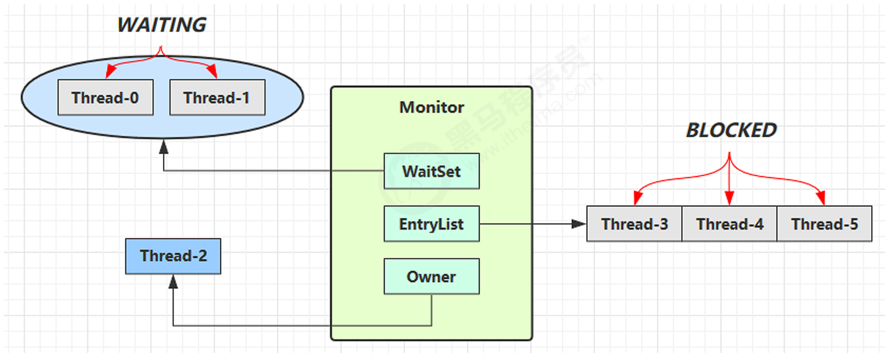
- 刚开始 Monitor 中 Owner 为 null
- 当 Thread-2 执行 synchronized(obj) 就会将 Monitor 的所有者 Owner 置为 Thread-2，Monitor中只能有一 个 Owner
- 在 Thread-2 上锁的过程中，如果 Thread-3，Thread-4，Thread-5 也来执行 synchronized(obj)，就会进入 EntryList，线程状态变成BLOCKED
- Thread-2 执行完同步代码块的内容，然后唤醒 EntryList 中等待的线程来竞争锁，竞争是非公平的
- WaitSet 中的 Thread-0，Thread-1 是之前获得过锁，但条件不满足进入 WAITING 状态的线程
synchronized 优化原理进阶¶
轻量级锁¶
轻量级锁的使用场景：如果一个对象有多线程要加锁，但加锁的时间是错开的（也就是没有竞争），那么可以使用轻量级锁来优化。
轻量级锁对使用者是透明的，即语法仍然是 synchronized
例如以下代码：
static final Object obj = new Object();
public static void method1() {
synchronized( obj ) {
// 同步块 A
method2();
}
}
public static void method2() {
synchronized( obj ) {
// 同步块 B
}
}
加锁过程：
- 创建锁记录（Lock Record）对象，每个线程的栈帧都会包含一个锁记录的结构，内部可以存储锁定对象的 Mark Word
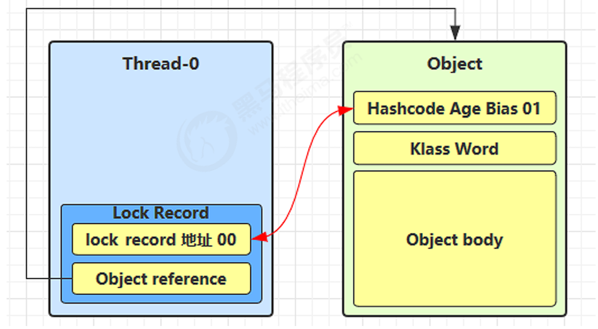
-
让锁记录中 Object reference 指向锁对象，并尝试用 cas 替换 Object 的 Mark Word，将 Mark Word 的值存入锁记录
-
如果 cas 替换成功，对象头中存储了 锁记录地址和状态 00 ，表示由该线程给对象加锁
-
如果 cas 失败，有两种情况
- 如果是其它线程已经持有了该 Object 的轻量级锁，这时表明有竞争，进入锁膨胀过程
- 如果是自己执行了 synchronized 锁重入，那么再添加一条 Lock Record 作为重入的计数
- 当退出 synchronized 代码块（解锁时）如果有取值为 null 的锁记录，表示有重入，这时重置锁记录，表示重入计数减一
- 当退出 synchronized 代码块（解锁时）锁记录的值不为 null，这时使用 cas 将 Mark Word 的值恢复给对象 头
- 成功，则解锁成功
- 失败，说明轻量级锁进行了锁膨胀或已经升级为重量级锁，进入重量级锁解锁流程
锁膨胀¶
如果在尝试加轻量级锁的过程中，CAS 操作无法成功，这时一种情况就是有其它线程为此对象加上了轻量级锁（有竞争），这时需要进行锁膨胀，将轻量级锁变为重量级锁。
过程如下：
- 当 Thread-1 进行轻量级加锁时，Thread-0 已经对该对象加了轻量级锁
- 这时 Thread-1 加轻量级锁失败，进入锁膨胀流程
- 即为 Object 对象申请 Monitor 锁，让 Object 指向重量级锁地址
- 然后自己进入 Monitor 的 EntryList，状态变成BLOCKED
- 当 Thread-0 退出同步块解锁时，使用 CAS 将 Mark Word 的值恢复给对象头，失败。这时会进入重量级解锁流程，即按照 Monitor 地址找到 Monitor 对象，设置 Owner 为 null，唤醒 EntryList 中 BLOCKED 线程
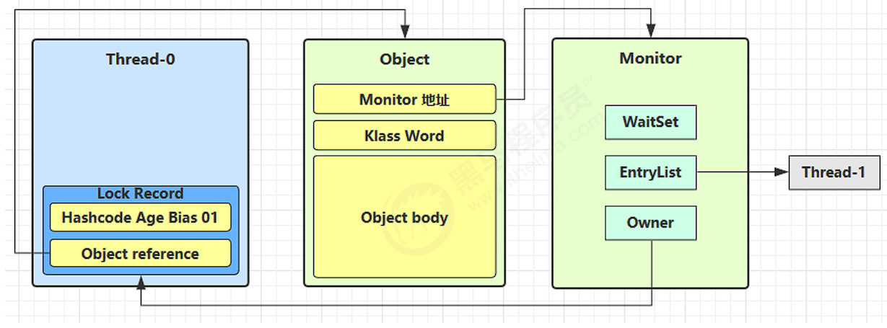
自旋优化¶
重量级锁竞争的时候，可以使用自旋来进行优化，如果当前线程自旋成功（即这时候持锁线程已经退出了同步块，释放了锁），当前线程就可以避免阻塞。
- 自旋会占用 CPU 时间，单核 CPU 自旋就是浪费，多核 CPU 自旋才能发挥优势。
- 在 Java 6 之后自旋锁是自适应的，比如对象刚刚的一次自旋操作成功过，那么认为这次自旋成功的可能性会高，就多自旋几次；反之，就少自旋甚至不自旋。
- Java 7 之后不能控制是否开启自旋功能。
偏向锁¶
轻量级锁在没有竞争时（无其他线程需要与其竞争锁对象），每次重入仍然需要执行 CAS 操作。
Java 6 中引入了偏向锁来做进一步优化：
-
偏向锁是JVM为了提高同步性能而设计的一种锁优化机制。它基于"大多数情况下锁不存在竞争"的假设，让锁偏向于第一个获取它的线程。
-
只有第一次使用 CAS 才将线程 ID 设置到对象的 Mark Word 头，之后发现这个线程 ID 是自己的就表示没有竞争，不用重新 CAS。以后只要不发生竞争，这个对象就归该线程所有。
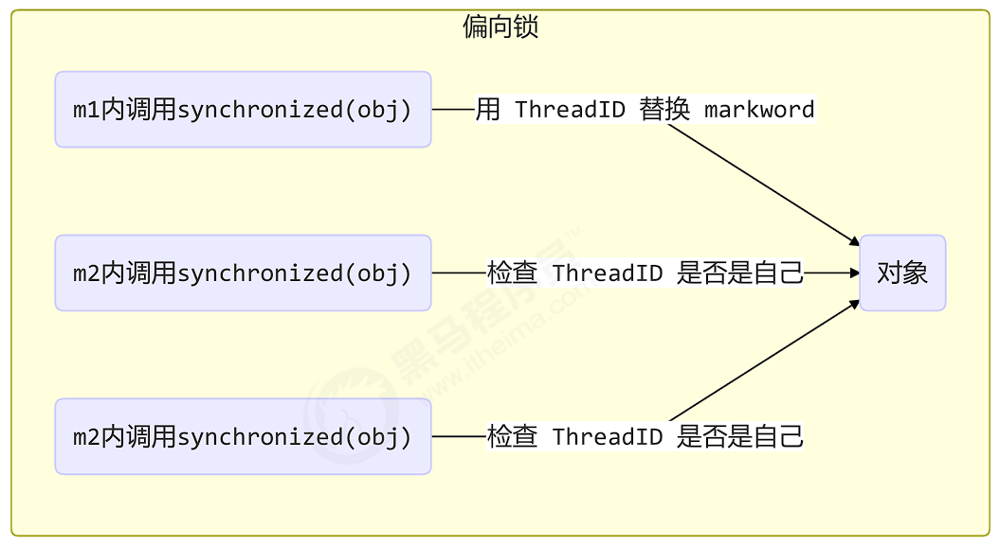
偏向状态¶
对象头(64 bit) Mark Word 状态：
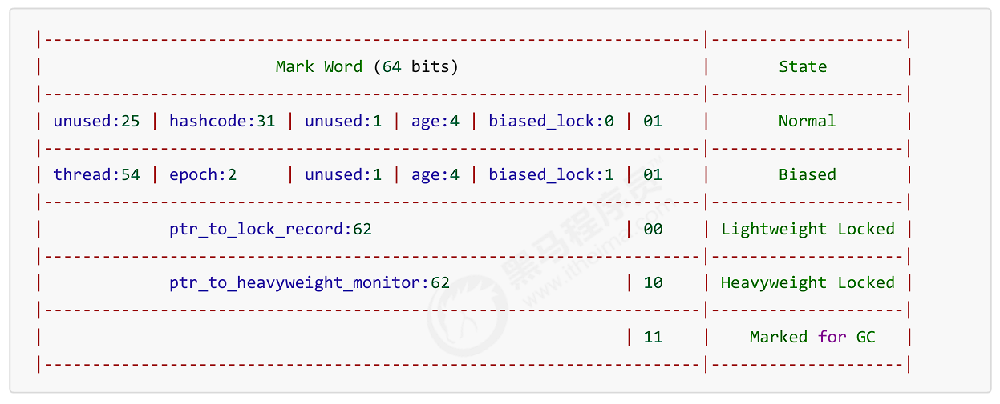
一个对象创建时：
- 如果开启了偏向锁（默认开启），那么对象创建后，
markword值为0x05即最后 3 位为 101，这时它的 thread、epoch、age 都为 0 - 偏向锁是默认是延迟的，不会在程序启动时立即生效，如果想避免延迟，可以使用虚拟机参数
-XX:BiasedLockingStartupDelay=0来禁用延迟 - 如果没有开启偏向锁，那么对象创建后，
markword值为0x01即最后 3 位为 001，这时它的hashcode、 age 都为 0，第一次用到hashcode时才会赋值
Tip
-XX:-UseBiasedLocking 禁用偏向锁
-XX:+UseBiasedLocking 启用偏向锁（默认）
撤销-调用对象的 hashCode¶
偏向锁的对象 MarkWord 中存储的是线程 id，如果调用 hashCode ，由于长度限制，对象头中不能同时存储 线程ID 和 hashCode，会导致偏向锁被撤销
- 轻量级锁会在锁记录中记录 hashCode
- 重量级锁会在 Monitor 中记录 hashCode
撤销-其他线程使用对象¶
当有其它线程使用偏向锁对象时，会将偏向锁升级为轻量级锁
撤销-调用 wait/notify¶
wait/notify 需要使用重量级锁，因此会撤销偏向锁
批量重偏向¶
当偏向锁的假设不成立(即存在多个线程竞争锁)时，JVM需要撤销偏向锁。如果频繁发生偏向锁撤销，会影响性能。
批量重偏向就是为了解决这个问题。
- 当某个类的偏向锁撤销次数达到阈值(默认20次)时，JVM会认为这个类的锁不适合使用偏向模式
- JVM会执行批量重偏向，将这个类的所有实例的偏向锁状态重置
- 之后这些实例的锁可以重新偏向于新的线程，而不是直接升级为轻量级锁
批量撤销¶
批量撤销是JVM在检测到某个类的偏向锁频繁发生竞争时，彻底禁用该类的偏向锁优化的机制。如果撤销次数增长到40次，就会触发批量撤销。
锁消除¶
JVM在运行时会进行逃逸分析，判断对象是否可能被多个线程访问：
- 不逃逸（No Escape）：对象仅在当前方法或线程内使用，不会被其他线程访问。
- 方法逃逸（Method Escape）：对象可能被其他方法访问，但仍限于当前线程。
- 线程逃逸（Thread Escape）：对象可能被其他线程访问（需要同步）。
如果JVM发现某个锁对象不会逃逸到其他线程（即不存在真正的竞争），就会直接消除锁，减少同步开销。
例如：单线程环境下StringBuffer 会被替换成 StringBuilder
wait/notify¶
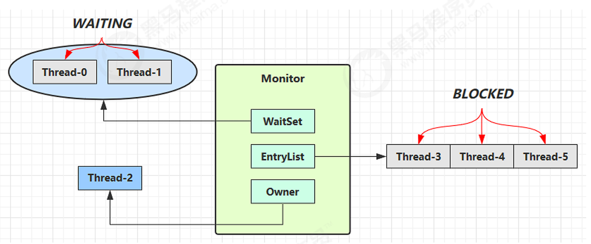
- Owner 线程发现条件不满足，调用 wait 方法，即可进入 WaitSet 变为 WAITING 状态
- BLOCKED 和 WAITING 的线程都处于阻塞状态，不占用 CPU 时间片
- BLOCKED 线程会在 Owner 线程释放锁时唤醒
- WAITING 线程会在 Owner 线程调用 notify 或 notifyAll 时唤醒，但唤醒后并不意味者立刻获得锁，仍需进入 EntryList 重新竞争
| 方法 | 作用 | 说明 |
|---|---|---|
wait() |
让当前线程进入等待状态 | 释放锁，进入等待队列，直到被 notify()/notifyAll() 唤醒或超时 |
notify() |
随机唤醒一个等待线程 | 从等待队列中选择一个线程唤醒（不保证公平性） |
notifyAll() |
唤醒所有等待线程 | 所有等待线程竞争锁，只有一个能继续执行 |
注意
它们必须在 synchronized 代码块或方法中使用。
调用 wait()/notify() 前，线程必须持有该对象的锁，否则会抛出 IllegalMonitorStateException。
wait() 和 sleep() 的区别
wait() |
sleep() |
|---|---|
| 释放锁 | 不释放锁 |
属于 Object 类 |
属于 Thread 类 |
必须和 synchronized 一起使用 |
可以在任何地方调用 |
可被 notify() 唤醒 |
只能等时间到或 interrupt() |
| 线程状态 TIMED_WAITING | 线程状态 TIMED_WAITING |
虚假唤醒¶
虚假唤醒是指线程在没有收到明确通知的情况下从等待状态中被唤醒的现象。
为了防止虚假唤醒导致的问题，最佳实践是：
-
总是在循环中检查条件，而不是简单的if语句
-
使用while循环而不是if来检查条件变量
示例代码:
// 不安全的写法 - 可能因虚假唤醒导致问题
synchronized(lock) {
if(!condition) {
lock.wait();
}
// 执行操作
}
// 正确的写法 - 防止虚假唤醒
synchronized(lock) {
while(!condition) { // 使用while循环
lock.wait();
}
// 执行操作
}
保护性暂停¶
保护性暂停是一种多线程设计模式，用于当一个线程需要等待某个条件满足后才能继续执行的情况。
保护性暂停模式的核心思想是：
- 保护条件：线程执行前必须满足的条件
- 暂停机制：当条件不满足时，线程主动暂停执行
- 恢复机制：当条件满足时，线程被唤醒继续执行
示例代码:
public class GuardedObject {
private Object response;
/**
* 获取结果
* @param timeout 超时时间
* @return 结果
*/
public Object get(long timeout){
synchronized(this) {
long remaining = timeout;
long endTime = System.currentTimeMillis() + timeout;
while(response == null && remaining > 0) {
try {
this.wait(remaining);
} catch (InterruptedException e) {
Thread.currentThread().interrupt();
throw new RuntimeException(e);
}
// 虚假唤醒时剩余等待时间
remaining = endTime - System.currentTimeMillis();
}
return response;
}
}
public void complete(Object response) {
synchronized(this) {
this.response = response;
this.notifyAll();
}
}
}
Info
join()方法底层就是通过该方式实现的
生产者消费者模式¶
- 与前面的保护性暂停中的 GuardObject 不同，不需要产生结果和消费结果的线程一一对应
- 消费队列可以用来平衡生产和消费的线程资源
- 生产者仅负责产生结果数据，不关心数据该如何处理，而消费者专心处理结果数据
- 消息队列是有容量限制的，满时不会再加入数据，空时不会再消耗数据
- JDK 中各种阻塞队列，采用的就是这种模式
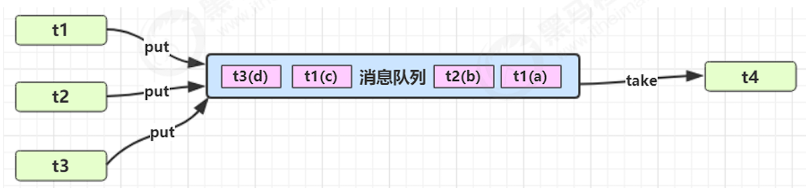
示例代码：
@Slf4j
public class TestMessageQueue {
public static void main(String[] args) throws InterruptedException {
MessageQueue queue = new MessageQueue(2);
for (int i = 0; i < 3; i++) {
int id = i;
new Thread(() -> {
log.info("生产者{}开始生产消息", id);
queue.put(new Message(id, "消息" + id));
}, "生产者" + i).start();
}
Thread.sleep(1000);
new Thread(() -> {
while (true) {
try {
Thread.sleep(500);
} catch (InterruptedException e) {
throw new RuntimeException(e);
}
Message msg = queue.take();
log.info("消费者开始消费消息：{}", msg.getValue());
}
}, "消费者").start();
}
}
@Slf4j
class MessageQueue {
/**
* 队列容量
*/
private final int capacity;
/**
* 消息队列
*/
private final LinkedList<Message> list;
public MessageQueue(int capacity) {
this.capacity = capacity;
list = new LinkedList<>();
}
/**
* 获取消息
* @return 消息
*/
public Message take() {
synchronized (list) {
// 队列为空，等待生产者生产
while (list.isEmpty()) {
log.info("队列为空，等待生产者生产");
try {
list.wait();
} catch (InterruptedException e) {
throw new RuntimeException(e);
}
}
Message message = list.removeFirst();
list.notifyAll();
return message;
}
}
/**
* 放入消息
* @param message 消息
*/
public void put(Message message) {
synchronized (list) {
// 队列已满，等待消费者消费
while (list.size() == capacity) {
log.info("队列已满，等待消费者消费");
try {
list.wait();
} catch (InterruptedException e) {
throw new RuntimeException(e);
}
}
list.addLast(message);
list.notifyAll();
}
}
}
@Getter
class Message {
private final int id;
private final Object value;
public Message(int id, Object value) {
this.id = id;
this.value = value;
}
}
park/unpark¶
它们是 LockSupport 类中的方法
// 暂停当前线程
LockSupport.park();
// 恢复某个线程的运行
LockSupport.unpark(暂停线程对象);
与 Object 的 wait & notify 相比
- wait，notify 和 notifyAll 必须配合 Object Monitor 一起使用，而 park，unpark 不需要
- park & unpark 是以线程为单位来【阻塞】和【唤醒】线程，而 notify 只能随机唤醒一个等待线程，notifyAll 是唤醒所有等待线程，就不那么【精确】
- park & unpark 可以先执行 unpark，而 wait & notify 不能先 notify
原理¶
许可机制：每个线程都有一个关联的许可(最多一个)
unpark()提供许可park()消耗许可
每个线程都有自己的一个 Parker 对象（非Java语言实现），由三部分组成 _counter ， _cond 和 _mutex
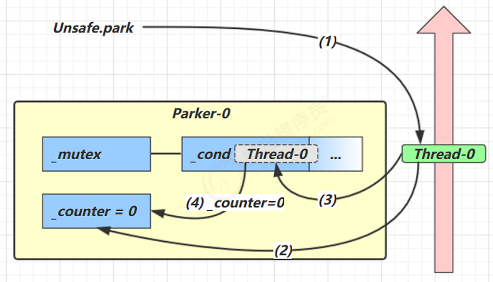
- 当前线程调用 Unsafe.park() 方法
- 检查 _counter ，本情况为 0，这时，获得 _mutex 互斥锁
- 线程进入 _cond 条件变量阻塞
- 设置 _counter = 0
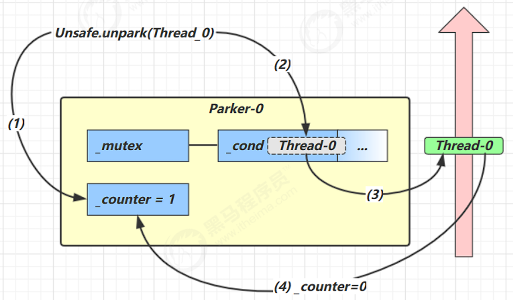
- 调用 Unsafe.unpark(Thread_0) 方法，设置 _counter 为 1
- 唤醒 _cond 条件变量中的 Thread_0
- Thread_0 恢复运行
- 设置 _counter 为 0
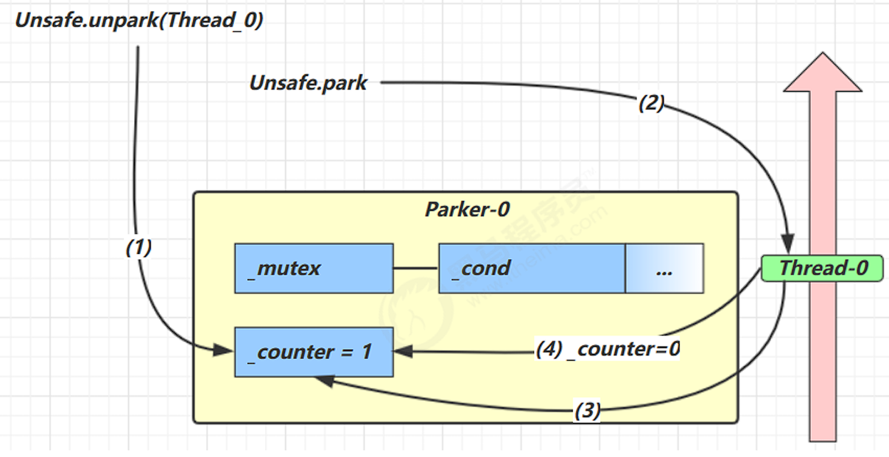
- 调用 Unsafe.unpark(Thread_0) 方法，设置 _counter 为 1
- 当前线程调用 Unsafe.park() 方法
- 检查 _counter ，本情况为 1，这时线程无需阻塞，继续运行
- 设置 _counter 为 0
线程状态转换¶
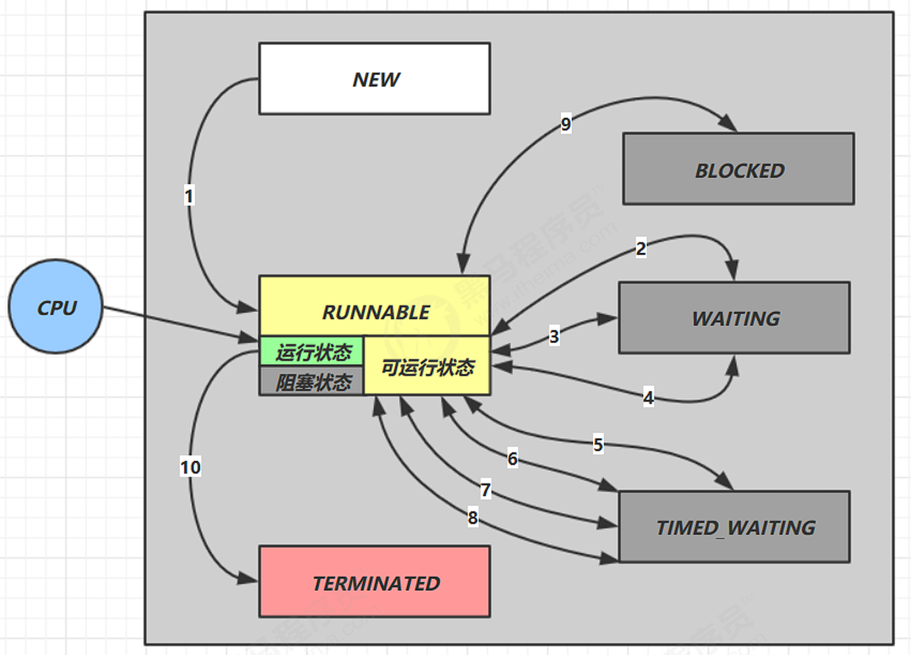
情况 1 NEW --> RUNNABLE¶
当调用 t.start() 方法时，由 NEW --> RUNNABLE
情况 2 RUNNABLE <--> WAITING¶
线程用 synchronized(obj) 获取了对象锁后
- 调用
obj.wait()方法时，t 线程从 RUNNABLE --> WAITING - 调用
obj.notify()，obj.notifyAll()，t.interrupt()时- 竞争锁成功，t 线程从 WAITING --> RUNNABLE
- 竞争锁失败，t 线程从 WAITING --> BLOCKED
情况 3 RUNNABLE <--> WAITING¶
-
当前线程调用
t.join()方法时，当前线程从 RUNNABLE --> WAITING- 注意是当前线程在t 线程对象的监视器上等待
-
t 线程运行结束，或调用了当前线程的
interrupt()时，当前线程从 WAITING --> RUNNABLE
情况 4 RUNNABLE <--> WAITING¶
- 当前线程调用
LockSupport.park()方法会让当前线程从 RUNNABLE --> WAITING - 调用
LockSupport.unpark(目标线程)或调用了线程 的interrupt()，会让目标线程从 WAITING -->RUNNABLE
情况 5 RUNNABLE <--> TIMED_WAITING¶
线程用 synchronized(obj) 获取了对象锁后
- 调用
obj.wait(long n)方法时，t 线程从 RUNNABLE --> TIMED_WAITING - t 线程等待时间超过了 n 毫秒，或调用
obj.notify()，obj.notifyAll(),t.interrupt()时- 竞争锁成功，t 线程从 TIMED_WAITING --> RUNNABLE
- 竞争锁失败，t 线程从 TIMED_WAITING --> BLOCKED
情况 6 RUNNABLE <--> TIMED_WAITING¶
-
当前线程调用
t.join(long n)方法时，当前线程从 RUNNABLE --> TIMED_WAITING -
当前线程等待时间超过了 n 毫秒，或t 线程运行结束，或调用了当前线程的
interrupt()时，当前线程从 TIMED_WAITING --> RUNNABLE
情况 7 RUNNABLE <--> TIMED_WAITING¶
- 当前线程调用 Thread.sleep(long n) ，当前线程从 RUNNABLE --> TIMED_WAITING
- 当前线程等待时间超过了 n 毫秒，当前线程从 TIMED_WAITING --> RUNNABLE
情况 8 RUNNABLE <--> TIMED_WAITING¶
- 当前线程调用
LockSupport.parkNanos(long nanos)或 程 调用LockSupport.parkUntil(long millis)时，当前线程从 RUNNABLE --> TIMED_WAITING - 调用
LockSupport.unpark(目标线程)或调用了线程 的interrupt()，或是等待超时，会让目标线程从 TIMED_WAITING--> RUNNABLE
情况 9 RUNNABLE <--> BLOCKED¶
- t 线程用
synchronized(obj)获取了对象锁时如果竞争失败，从 RUNNABLE --> BLOCKED - 持 obj 锁线程的同步代码块执行完毕，会唤醒该对象上所有 BLOCKED 的线程重新竞争，如果其中 t 线程竞争 成功，从 BLOCKED --> RUNNABLE ，其它失败的线程仍然 BLOCKED
情况 10 RUNNABLE <--> TERMINATED¶
当前线程所有代码运行完毕，进入 TERMINATED
多把锁¶
引例：
一间大屋子有两个功能：睡觉、学习，互不相干。
现在A要学习，B要睡觉，但如果只用一间屋子（一个对象锁）的话，那么并发度很低
解决方法是准备多个房间（多个对象锁）
class BigRoom {
private final Object studyRoom = new Object();
private final Object bedRoom = new Object();
public void sleep() {
synchronized (bedRoom) {
log.debug("sleeping 2 小时");
Sleeper.sleep(2);
}
}
public void study() {
synchronized (studyRoom) {
log.debug("study 1 小时");
Sleeper.sleep(1);
}
}
}
将锁的粒度细分
- 好处，可以增强并发度
- 坏处，如果一个线程需要同时获得多把锁，就容易发生死锁
活跃性¶
死锁¶
死锁是指两个或多个进程/线程在执行过程中，由于争夺资源而造成的一种互相等待的现象，若无外力干涉，它们都将无法推进下去。
死锁四要素：
- 互斥：资源一次只能被一个进程/线程占用
- 持有并等待：进程/线程在持有至少一个资源的同时，还在等待获取其他被占用的资源。
- 非抢占条件：已分配给进程/线程的资源不能被其他进程强行夺取
- 循环等待：存在一个进程/线程的循环链，链中的每个进程都在等待下一个进程所占用的资源。
如果一个线程需要同时获取多把锁，就容易发生死锁
例如：
-
t1 线程先获得 A 对象锁，接下来想获取 B 对象锁
-
t2 线程先获得 B 对象锁，接下来想获取 A 对象锁
这样就造成了t1和t2相互等待
定位死锁¶
检测死锁可以使用 jconsole 工具，或者使用 jps 定位进程 id，再用 jstack 定位死锁
检测到死锁输出：
Found one Java-level deadlock:
...
Note
破坏死锁四要素中任意一个即可解决死锁
哲学家就餐问题¶
问题场景设定如下：
- 五位哲学家围坐在一张圆桌周围
- 每位哲学家面前有一盘食物
- 每两位哲学家之间放有一根筷子(共五根)
- 哲学家只有同时拿到左右两边的筷子才能进餐
- 进餐结束后会放下筷子继续思考
问题的关键在于如何设计一个算法，使得：
- 不会发生死锁(所有哲学家都拿着一根筷子等待另一根)
- 不会发生饥饿(某些哲学家永远无法进餐)
- 允许最大程度的并行(尽可能多的哲学家同时进餐)
解决方案
- 资源请求顺序：规定哲学家必须按照一定顺序请求筷子，例如：先拿左边的筷子，再拿右边的筷子。这样可以避免循环等待。
- 限制并发：限制同时进餐的哲学家数量，例如：最多允许 4 位哲学家同时进餐。这样可以减少竞争。
- 随机等待：在请求筷子失败时，哲学家可以随机等待一段时间再尝试，这样可以降低冲突概率。
活锁¶
活锁是多线程或分布式系统中的一种现象，与死锁类似但又有重要区别。
在活锁情况下，线程或进程并没有被阻塞，而是在不断地尝试解决冲突，但由于彼此之间的相互让步或协调不当，导致系统无法继续向前推进。
活锁与死锁的区别
| 特性 | 死锁(Deadlock) | 活锁(Livelock) |
|---|---|---|
| 线程状态 | 线程被阻塞，不执行任何操作 | 线程仍在执行，但没有进展 |
| 资源占用 | 资源被永久占用 | 资源可能被不断获取和释放 |
| CPU使用 | 低 | 高(因为线程仍在忙碌) |
| 表现形式 | 完全停止 | 看似忙碌但无实际进展 |
活锁的典型场景
- 过度礼貌的哲学家：在哲学家就餐问题中，如果所有哲学家同时拿起左边的筷子，发现右边的筷子不可用，然后同时放下左边的筷子，等待一段时间后再次尝试，如此循环。
- 消息重试机制：两个进程互相发送消息，消息丢失后都重试，但重试时间同步导致持续冲突。
- 资源分配策略：多个线程在检测到冲突时都主动释放资源并重试，导致持续的资源竞争循环。
饥饿¶
饥饿（Starvation）是多线程或资源分配系统中一种现象，指的是某些线程或进程由于长期无法获取所需资源而无法执行，而其他线程却能正常执行。
饥饿不同于死锁（Deadlock）和活锁（Livelock），因为饥饿的线程没有被阻塞，而是一直处于就绪状态但得不到调度。
饥饿 vs. 死锁 vs. 活锁
| 特性 | 死锁 (Deadlock) | 活锁 (Livelock) | 饥饿 (Starvation) |
|---|---|---|---|
| 线程状态 | 完全阻塞（不执行） | 持续执行但无进展 | 可运行但得不到资源 |
| 资源占用 | 资源被永久占用 | 资源可能被反复获取和释放 | 资源被高优先级线程抢占 |
| CPU使用 | 低（线程阻塞） | 高（线程忙碌但无进展） | 可能高（线程在等待） |
| 解决方案 | 破坏死锁条件 | 引入随机性/优先级 | 公平调度/避免优先级反转 |
解决方案：
1. 公平调度（Fairness）
- 使用公平锁（
ReentrantLock(true)）：
ReentrantLock fairLock = new ReentrantLock(true); // 公平锁
- 线程池使用公平队列（如
newFixedThreadPool+LinkedBlockingQueue）。
2. 避免优先级反转（Priority Inversion）
- 在实时系统中（如RTOS），确保低优先级任务不会被无限抢占。
- 使用优先级继承（Priority Inheritance）或优先级天花板（Priority Ceiling）协议。
3. 时间片轮转（Round-Robin Scheduling）
- 操作系统/线程调度器可以强制让每个线程都能获得执行机会（如Linux的CFS调度器）。
4. 资源分配超时
ReentrantLock¶
相对于 synchronized 它具备如下特点
- 可中断
- 可以设置超时时间
- 可以设置为公平锁
- 支持多个条件变量
与synchronized一样都是可重入锁
Info
可重入是指同一个线程如果首次获得了这把锁，那么因为它是这把锁的拥有者，因此有权利再次获取这把锁
基本语法:
reentrantLock.lock();
try {
// 临界区
} finally {
reentrantLock.unlock();
}
可重入¶
示例代码：
private static final ReentrantLock lock = new ReentrantLock();
public static void main(String[] args) {
lock.lock();
try {
log.info("lock acquired");
method();
} finally {
log.info("lock released");
lock.unlock();
}
}
public static void method() {
lock.lock();// 重入
try {
log.info("reentrant lock acquired");
} finally {
log.info("reentrant lock released");
lock.unlock();
}
}
可打断¶
示例代码：
private static final ReentrantLock lock = new ReentrantLock();
public static void main(String[] args) {
Thread t1 = new Thread( () -> {
try {
log.info("尝试获得锁");
lock.lockInterruptibly();//
} catch (InterruptedException e) {
log.error("获取锁失败", e);
throw new RuntimeException(e);
}
try {
lock.lock();
log.info("已获得锁");
} finally {
lock.unlock();
}
});
lock.lock();
t1.start();
t1.interrupt();
lock.unlock();
}
锁超时¶
private static final ReentrantLock lock = new ReentrantLock();
public static void main(String[] args) {
Thread t1 = new Thread( () -> {
log.info("尝试获得锁");
try {
if (!lock.tryLock(1, TimeUnit.SECONDS)) {
log.info("尝试获得锁失败");
return;
}
} catch (InterruptedException e) {
log.error("获取锁失败", e);
return;
}
try {
log.info("已获得锁");
} finally {
lock.unlock();
}
});
lock.lock();
t1.start();
// lock.unlock();
}
Tip
lock.tryLock()返回布尔值
lock.tryLock()不带参数，无法获得锁会立刻失败
公平锁¶
ReentrantLock默认是不公平的，可通过
ReentrantLock lock = new ReentrantLock(true);
将其设置为公平锁
条件变量¶
Condition 是 ReentrantLock 提供的一种线程等待/唤醒机制，类似于 Object.wait() 和 Object.notify()，但更强大：
- 一个
ReentrantLock可以创建多个Condition，实现不同条件的等待队列。 - 适用于生产者-消费者模型、线程池任务调度等场景。
| 方法 | 说明 |
|---|---|
await() |
释放锁并进入等待（类似 wait()） |
awaitUninterruptibly() |
不可中断的等待 |
awaitNanos(long nanos) |
超时等待（纳秒级） |
await(long time, TimeUnit unit) |
超时等待 |
signal() |
唤醒一个等待线程（类似 notify()） |
signalAll() |
唤醒所有等待线程（类似 notifyAll()） |
注意
await前需要获得锁，且await会释放锁
ReentrantLock lock = new ReentrantLock();
Condition readCondition = lock.newCondition();
Condition writeCondition = lock.newCondition();
volatile boolean canRead = true;
volatile boolean canWrite = false;
// 读操作
lock.lock();
try {
while (!canRead) {
readCondition.await();
}
canRead = false;
// 执行读操作
canWrite = true;
writeCondition.signalAll(); // 唤醒所有写线程
} finally {
lock.unlock();
}
// 写操作
lock.lock();
try {
while (!canWrite) {
writeCondition.await();
}
canWrite = false;
// 执行写操作
canRead = true;
readCondition.signalAll(); // 唤醒所有读线程
} finally {
lock.unlock();
}
上一节：Java线程
下一节：并发编程三要素